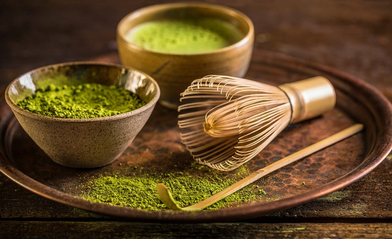
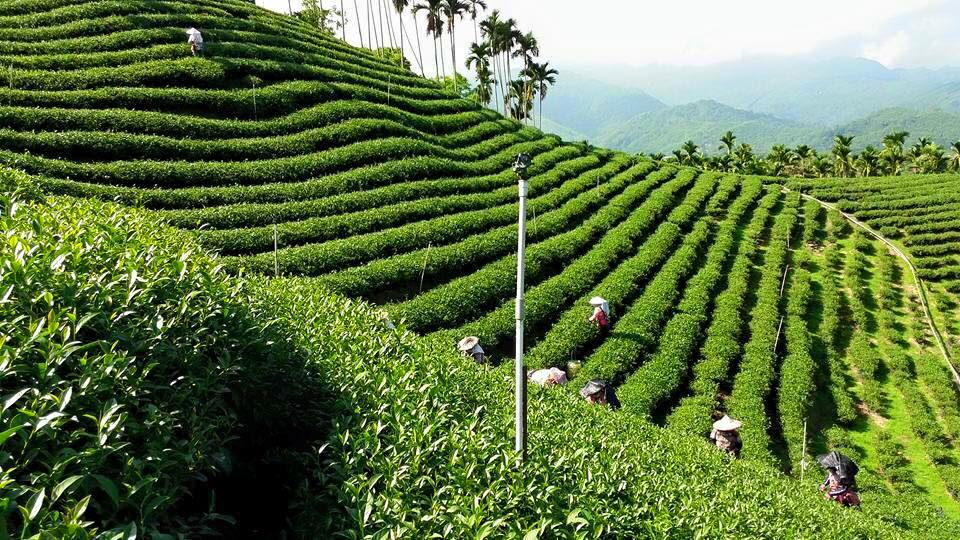
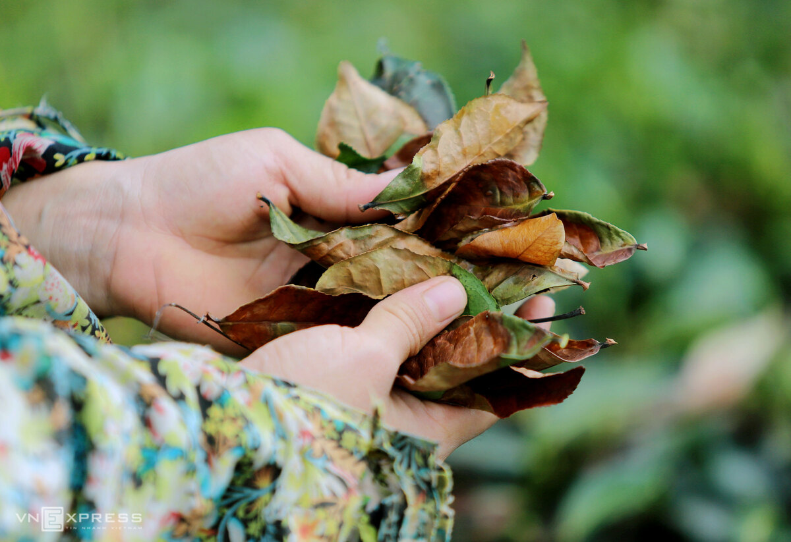
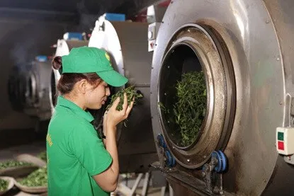
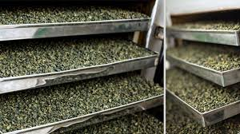

ⓉⒺⒶ 𝓸̂ 𝓵𝓸𝓷𝓰 ?
_____Website bán trà ô long_____
Đặc điểm
Là loại trà có phẩm chất tốt, hương vị phong phú, đang ngày càn phổ biến trên thế giới, những thông tin sau đây sẽ giúp bạn hiểu nhanh “trà ô long là gì ?” Trà ô long là gì ? Trà Ô Long đang là loại trà có tốc độ phổ biến nhanh nhất Việt Nam hiện nay. Trước đây, người Việt chỉ quen với việc uống trà Thái Nguyên (còn gọi là trà bắc, trà thái, trà tân cương, trà móc câu…), trà sen, trà lài… Trà Ô Long xuất hiện gây rất nhiều tò mò, có người đã uống, có người chỉ nghe. Bài này mình sẽ cho các bạn biết Trà Ô Long là gì. Trong cảm quan của rất nhiều người Việt Nam, trà Ô Long có hình viên tròn, hoàn toàn khác với các loại trà phổ biến tại Việt Nam có hình lá cuộn, mùi thơm nồng, nước xanh vàng, vị dịu nhẹ dễ uống, và “nghe nói” có tác dụng giảm béo ^__^ Nhưng một cách chính xác, Ô Long là một loại trà có độ oxy hoá từ 8-80%. Hết :) Trà Ô Long ở Việt Nam hầu hết là Ô Long xanh. Tìm hiểu về các loại trà phong phú trên thế giới Trà Ô Long Đài Loan Như mình vừa nói, trà Ô Long là một nhóm trà (cũng giống như nhóm trà xanh, nhóm trà đen…) gồm nhiều loại. Bất cứ loại trà nào có độ oxy hoá từ 8-80% đều dược xếp vào trà Ô Long. Nhưng ở Việt Nam mình gần như 100% trà Ô Long là loại trà Ô Long Cao Sơn. Đây cũng là loại trà Ô Long phổ biến nhất tại Đài Loan và nổi tiếng toàn thế giới. Ngoài Ô Long Cao Sơn, Đài Loan còn có Ô Long Bao Chủng, Ô Long Động Đình (oxy hoá 20-30%), Ô Long Bái Hảo (50%). Ở Trung Quốc có Thiết Quan Âm, Đại Hồng Bào… Nói về Trà Ô Long Việt Nam không thể không nói đến sự ảnh hưởng từ Đài Loan. Theo hiểu biết của mình, 90% trà Ô Long được sản xuất tại Việt Nam được xuất khẩu qua Đài Loan, và cũng 90% các nhà máy, đồn điền sản xuất trà Ô Long Việt Nam đều có đầu tư từ Đài Loan. Nhu cầu tại Đài Loan luôn ở mức cao, diện tích trên đảo Đài Loan hạn chế là lý do họ đến Việt Nam. Họ cũng là những người giỏi nhất thế giới về trà Ô Long. Sở dĩ người Đài Loan chỉ đầu tư vào Ô Long Cao Sơn vì nhu cầu và giá trị thương mại tốt. Đó là lý do Việt Nam chỉ biết đến một loại trà ô long này (trà Ô Long Trà Việt cũng là loại trà này).
Hương vị trà ôlong ?
Hương vị : chát nhẹ, vị thanh, ngọt hậu. Trà được ủ lên men khoảng 30% đồng nghĩa với việc độ chát trong trà sẽ giảm xuống, không còn vị chát đượm như những loại trà Thái Nguyên, Cổ thụ hay Tuyết… khi nhấp ngụm trà đầu tiên, vị thanh mát sẽ tràn trong khoang miệng kéo theo đó là vị hơi béo ngậy. Sau đó là hậu vị, hương vị trà lưu lâu dài trong khoang miệng, bám khắp vòm họng và một vị ngọt hồi kéo dài. Đây chính là những yếu tố khiến cho bạn cảm thấy thích thú khi thưởng thức loại trà này.
Bảo quản?
Bảo quản : để giữ trà ngon lâu Trà là loại sản phẩm rất nhạy cảm với không khí và dễ bị mất mùi , mất vị khi bảo quản không tốt. Nếu chưa dùng đến, bạn có thể bảo quản nó ở ngăn đông tủ lạnh khi nó còn túi hút chân không. Nếu bạn đã mở ra, tốt nhất, hãy dùng nó trong vòng 15 ngày, sau mỗi lần dùng, hãy đậy kín hoặc buộc chặt miệng túi để tránh ánh sáng và không khí tràn vào.
Vùng nguyên liệu : Từ Bảo Lộc – Lâm Đồng
Tỉnh Lâm Đồng được biết đến là vùng trà rộng lớn và cho sản lượng trà cao nhất cả nước. Đây cũng là vùng sản xuất ra trà Ô Long ngon nhất Việt Nam, đặc biệt với những đồn điền trồng trà rộng lớn ở thôn Cầu Đất và thành phố Bảo Lộc. Nằm ở độ cao trên 900m so với mực nước biển, khí hậu mát mẻ quanh năm nên Bảo Lộc trở thành mảnh đất trù phú và phù hợp cho việc trồng trà.
Cách chế biến trà Ô Long ?
1 – Thu hái
Chúng ta có thể thu hoạch trà 4 đến 6 vụ trong một năm. Mỗi lần thu hoạch cách nhau khoảng 60 ngày. Đó là khoảng thời gian lý tưởng để cây trà có thể ra những búp mới với 3 hoặc 4 lá non. Việc thu hái cũng phải được làm một cách bài bản và tỉ mỉ theo đúng quy trình. – Hái búp trà cùng 3 đến 4 lá non tiếp theo – Dùng dao lam hái từng búp trà để tránh việc bị dập lá – Trà sau khi hái không quá 2 giờ đồng hồ, phải đưa về để tiếp tục quá trình ôxy hoá
2 – Làm héo và ôxy hoá
Sau khi lá trà được thu hoạch, các enzyme bên trong lá ngay lập tức bắt đầu các phản ứng hóa học tạo ra hương vị và mùi thơm của trà. Lá bắt đầu héo ở giai đoạn này vì độ ẩm bị mất. Người làm trà có thể kiểm soát việc này bằng cách kiểm soát độ ẩm của lá trà bị mất trong một quy trình được gọi là làm héo. Người làm trà phải chú ý cẩn thận đến điều kiện thời tiết và trạng thái của lá để đạt được hiệu quả mong muốn. Đây là lúc mà kỹ năng của người làm trà là cần thiết nhất.
3- Xào trà
Sau khi đạt được mức độ oxy hóa mong muốn, quá trình oxy hóa bị dừng lại do nhiệt độ cao làm nóng lá cây trong một quá trình gọi là ” diệt men “, hay còn gọi là làm ngừng quá trình oxy hoá. Bước này vô hiệu hóa các enzyme chịu trách nhiệm cho quá trình oxy hóa, do đó ngăn chặn sự biến đổi hóa học.
4 – Vò nén và sấy khô
Sau quá trình ” diệt men “. Những chiếc lá được định hình thành Trà Ô long được cuộn và sấy khô. Trong giai đoạn này, lá trà Ô long trải qua quá trình cán máy hiện đại mang hình dạng quả bóng đặc trưng. Lá trà Ô long bán cuộn có thể được cuộn chặt hơn thành dạng lá khô hình tôm bằng cách sử dụng các phương pháp truyền thống hơn. Trong quá trình cuộn và sấy khô, lá được cho vào bao tải vải được buộc chặt. Gói này sau đó được đặt vào một máy cán cuộn nó theo chuyển động tròn, làm cho những chiếc lá bóng lên. Sau những khoảng thời gian ngắn, trà được đổ ra cái khay lớn đan bằng để tách là trà. Sau đó, chúng được đưa vào các máy băng tải nhiệt độ thấp, làm khô lá từ từ.
5 – Rang trà
Sau giai đoạn vò nén và sấy khô, tuỳ thuộc vào loại trà cũng như hương vị mà người sản xuất muốn hướng tới, họ sẽ tiến hành quy trình rang. Đây là một quy trình đòi hỏi người làm phải dày dặn kinh nghiệm về kĩ thuật rang. Nó được ví von như ” một nghệ thuật” mà người làm phải trải qua nhiều năm đúc kết kinh nghiệm. Ngoài ra, những nghệ nhân rang trà còn phải tính toán đến các yếu tố tác động khác của môi trường như việc chăm sóc cây trà, thời gian và điều kiện thu hoạch cũng như quy trình sản xuất đến khi trà được sấy khô. Và cuối cùng là quy trình rang để đạt được hương vị tốt nhất cho trà Mình đã tổng hợp các bước chế biến trà Ô long cơ bản. Tuy nhiên, từng bước này đều cần sự tinh tế, tỉ mỉ và chuyên tâm của người làm trà mới tạo ra được một mẻ trà ngon. Hy vọng bài viết hữu ích với những kiến thức mà Trà Việt gửi đến bạn trong bài viết này.
trà olong tea
$5

Trà ôlong
10$
Trà ôlong
$20
Trà ôlong
$30

trà ôlong
$40
Trà ôlong
$50

Trà ôlong
$70
trà ôlong
$100